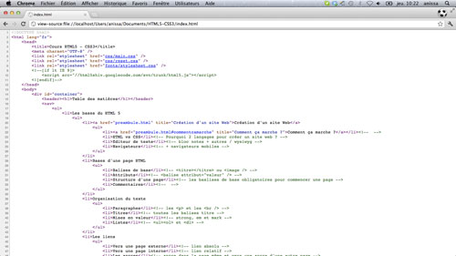
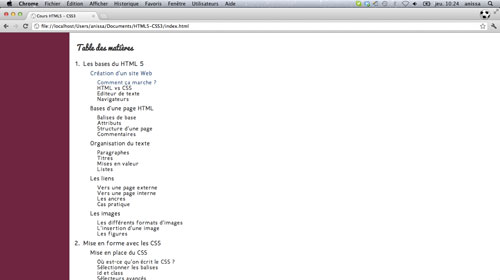
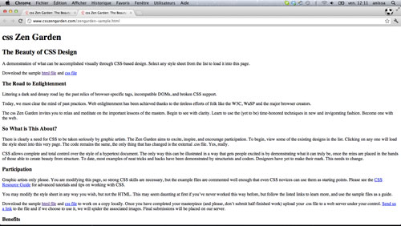

Vous avez certainement déjà surfé, ou plutôt navigué sur un site Web. Vous avez du, pour cela, utiliser un navigateur Web.
Le navigateur est en fait un programme qui va décoder l'HTML et le CSS, deux langages utilisés pour créer des sites Web, et nous afficher le tout tel qu'on le voit.
Principaux navigateurs Web
L'HTML, comme le CSS, est à la base du Web. Il a été inventé par Tim Berners-Lee, en 1991. Plus tard, c'est cet homme qui a fondé le W3C (World Wide Web Consortium), un organisme dont la mission est de définir les nouvelles versions des langages.

Le code HTML

Interprété par un navigateur
HTML vs CSS
Pourquoi est-ce qu'on a besoin de deux langages différents pour construire un site Web ?
Le HTML, Hypertexte Markup Language, est un langage qui va nous servir pour la structure de la page. Ce n'est pas un langage de programmation ! Avec le HTML, on va déterminer ce qui sera le titre, ce qui sera le menu, etc.
Le CSS, Cascading StyleSheet, arrivé lui en 1996, va faciliter le travail et l'organisation du site, en permettant la séparation entre la structure et la mise en forme. C'est dans le CSS que l'on va définir la taille, la couleur, la position, etc.

Un site web sans CSSLe même site web avec du CSS
Les éditeurs de texte
C'est bien gentil tout ça, mais combien coûte le logiciel qui permet de faire du HTML et CSS ?
RIEN. En fait, il suffit du bloc note. Ou n'importe quel outil qui permet d'écrire du texte ! Même word, si vous y tenez vraiment.
Il existe néanmoins plusieurs éditeurs de textes, gratuits, qui vont nous faciliter la tâche en utilisant des couleurs pour mettre en surbrillances les parties importantes du code.
Le plus simple et peut-être le plus courant est Notepad++. C'est celui que l'on utilisera pour ce cours. Exemples... + wysiwyg
Les Navigateurs
Les 5 navigateurs principaux sont (cliquez sur les icônes pour les télécharger) :
La différence entre tous ces navigateurs ? Simplement, ils n'interprètent pas tous de la même façon les langages HTML et CSS.
Il est donc important de tester votre site sur chacun de ces navigateurs. En ce qui concerne Internet Explorer, il faudra même tester les version précédentes, à partir de IE6 jusqu'à l'actuel, parce que chaque version réagis différemment. Fort heureusement, IE6 est de moins en moins utilisé et il sera bientôt possible de l'ignorer.
Il existe également des navigateurs pour mobiles. Il faudra aussi y penser.